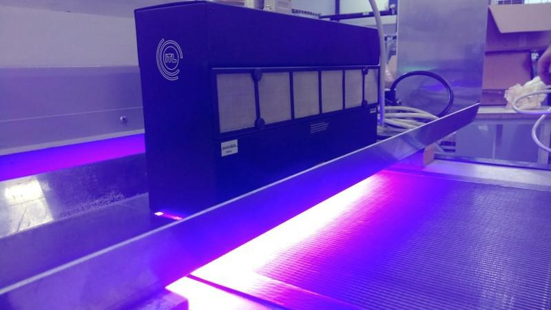
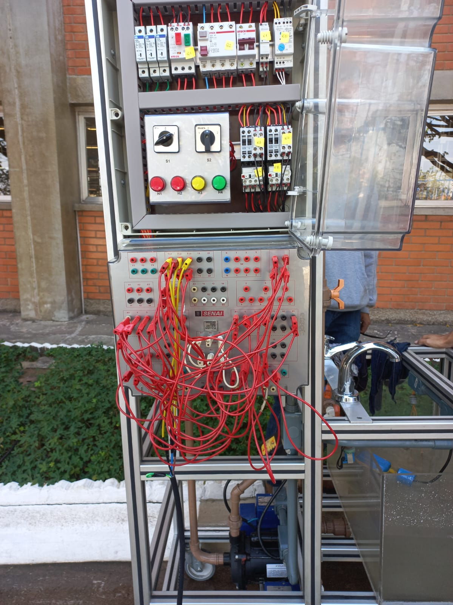

Introdução
Inicialmente o projeto começou com uma ideia, essa ideia era constituída pela reparação e melhoria de um protótipo já existente, com o grupo constituído por 5 pessoas houve a análise de habilidades e divisão de serviços para cada integrante, divididos entre protótipo, documentação e programação. Com o passar das primeiras etapas era necessário a criação de uma aplicação a máquina, está então foi concebida a partir do resfriamento de uma lâmpada UV, utilizada em diversas empresas gráficas e que esquentam com o tempo em que a lâmpada se mantém acessa. Passamos por alguns desafios, principalmente pelo concerto dos acrílicos que tinham vazamentos frequentemente, além da programação com diversos funcionamentos e dos testes com água.
Processo
Após a ideia principal adquirida, foi efetuada a separação da equipe por atividades, realizada através do sistema de s.w.o.t que demonstra a qualidade de casa pessoa, primeiramente fomos em busca de realizar um retrofit do sistema anterior que já estava sem funcionamento por entorno de 6 anos, depois de realizada manutenção se deu início a uma nova ideia do projeto, onde além do retrofit foram realizadas melhorias e a automatização da máquina.

Manutenção
Existiam diversas falhas e problemas, desde vazamentos de formas constantes nos reservatórios, motores em mau funcionamento e dentre outras falhas, que foram resolvidas pelo grupo, onde precisou-se adquirir um retentor para troca nos motores e silicone para vedação dos reservatórios, assim foi realizado o retrofit do sistema anteriormente disponibilizado pelo SENAI.Programação
A programação foi feita através do software da Panasonic, onde foram adicionadas diversas lógicas ao clp (Componente que transmite a programação para a IHM), onde em conjunto com a IHM controlam a máquina de forma automatizada, reduzindo o trabalho físico a praticamente 0, fazendo com que a máquina efetue um ciclo de água constante entre o reservatório superior e inferior o que causa o resfriamento de uma lâmpada UV, utilizada em grandes empresas para secagem de tintas.Conclusão
Após a passagem por todas essas etapas e dificuldades, é possível visualizar o projeto concluído, com funcionamento completo e sem vazamentos, protótipo qual tem seu funcionamento designado pela aplicação de resfriamento sendo totalmente automatizado e necessitando apenas do ligamento manual da máquina, realizando todo o processo pela programação desenvolvida através do CLP e levada aos motores, criando uma passagem de água contínua pela lâmpada, o que evita seu sobreaquecimento.